1. 다이어그램 일반
1.1 다이어그램 생성
프로젝트 탐색기에서 모델 이하의 요소를 선택(이후 따로 언급하지 않는 선택은 마우스 왼쪽클릭으로 정의함)한 후 마우스 오른쪽 버튼을 클릭하면 선택된 요소에서 실행할 수 있는 메뉴들이 나타나게 됩니다. 이 중 [다이어그램 생성] 메뉴에서 생성하고자 하는 다이어그램을 선택하여 다이어그램을 생성할 수 있습니다. 현재 UML 모델러에서 생성할 수 있는 다이어그램은 유스케이스, 클래스, 시퀀스, 액티비티, 컴포넌트 다이어그램 이 있습니다.
프로젝트 탐색기에서 모델 이하의 요소를 선택하고, 마우스 오른쪽 버튼을 클릭한 후 [다이어그램 생성]을 선택하면 현재 마우스 오른쪽 클릭을 실행한 요소 내에 생성 가능한 다이어그램 목록이 나타나게 됩니다.
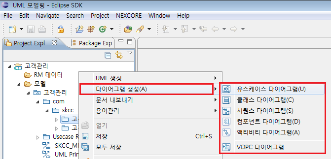
<그림 1. 다이어그램 생성 메뉴>
1.2 다이어그램 요소 추가
다이어그램을 생성하고 나면 다이어그램을 편집할 수 있는 편집 화면이 아래와 같이 나타나게 됩니다.
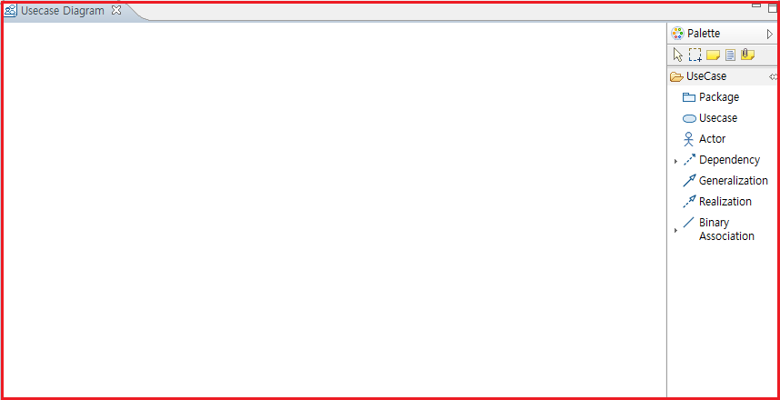
<그림 2. 생성된 다이어그램>
다이어그램에 요소를 추가하기 위해서는 두 가지 방식을 사용할 수 있습니다. 프로젝트 탐색기에서 이미 생성된 요소를 드래그&드랍으로 가져와서 다이어그램에 추가하는 방식과 다이어그램 편집 화면에서 기본으로 제공하는 팔레트를 이용하여 요소를 추가하는 방식이 있습니다.
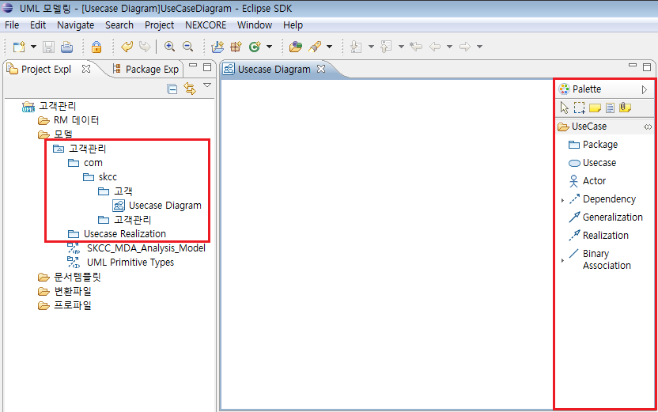
<그림 3. 다이어그램에 UML 요소 추가>

<그림 4. 생성된 UML 요소>
1.3 다이어그램 요소 삭제
다이어그램에서 요소의 삭제는 두 가지 종류가 있습니다. 모델 파일에 존재하는 UML 요소를 실제로 완전히 삭제하는 '모델에서 삭제’와 다이어그램에서 사용하고 있는 그래픽적인 요소 정보를 삭제하는 ‘다이어그램에서 삭제'가 있습니다.

<그림 5. 다이어그램에서 UML 요소 삭제>
기본적으로 UML 요소 삭제는 다이어그램에서 삭제 대상을 선택한 후에 마우스 오른 쪽 클릭을 하였을 때
나타나는 팝업 메뉴 창에서 선택이 가능합니다.
다이어그램에서 '모델에서 삭제' 기능은 단축키 [Ctrl + D]를 통해서만 가능하며 단축키를 입력하였을
시 아래와 같이 삭제를 확인하는 메시지가 나타나게 됩니다.
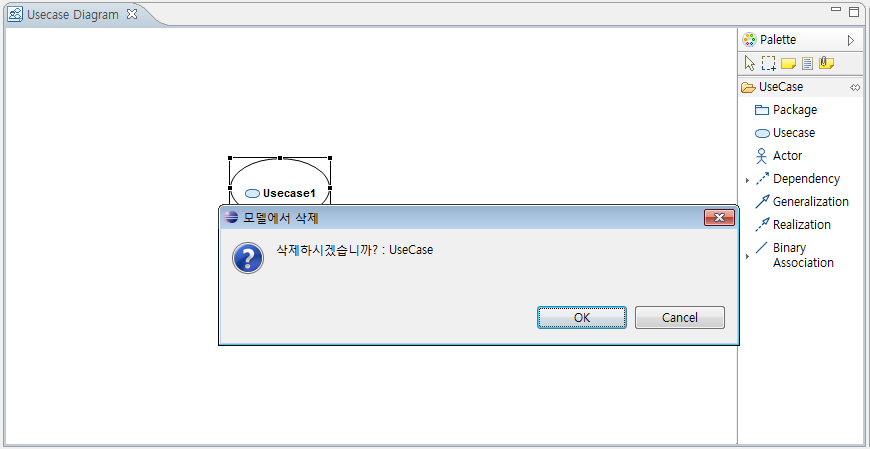
<그림 6. UML 요소 모델에서 삭제>
1.4. 다이어그램에서 요소 이름 변경
다이어그램에서 요소의 이름 변경은 두 가지 방식이 있습니다. 첫 번째 방식은 다이어그램 편집
화면에서 해당 요소의 이름을 직접 수정하는 직접 편집(Direct Editing) 입니다.
이름을 변경하고 싶은 해당 UML 요소를 다이어그램에서 선택한 후에 요소의 이름을 천천히 마우스 더블 클릭을 하거나 [F2] 단축키를 눌러 직접
편집(Direct Editing) 상태로 변경할 수 있습니다.
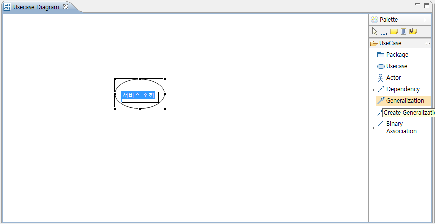
<그림 7. 요소 이름 직접 편집 (Direct Editing) 상태>
두 번째 방식은 특성 창을 이용한 수정입니다. 다이어그램 편집 화면에서 이름을 변경하고 싶은 요소를 선택하면 다이어그램 편집 화면 하단에 선택된 요소의 세부 사항을 편집할 수 있는 특성 창이 나타나게 되고, 특성 창의 일반 탭을 선택한 후 이름을 수정하면 요소의 이름을 변경할 수 있습니다.
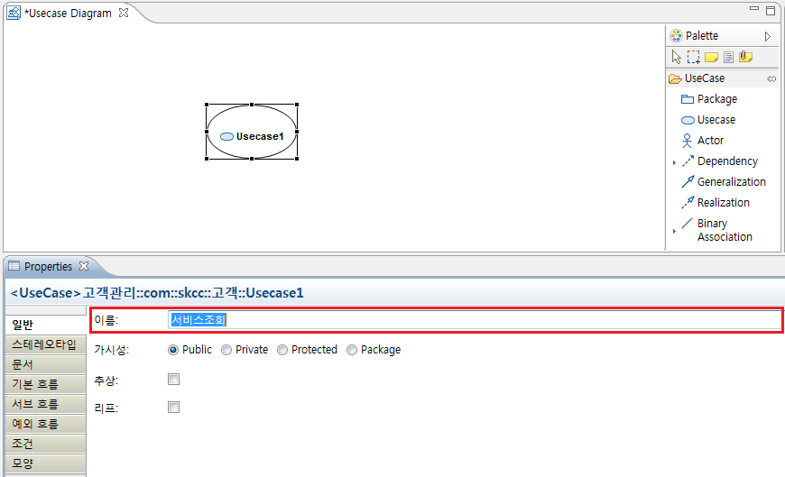
<그림 8. 특성 창을 이용한 요소의 이름 편집>
1.5 다이어그램에서 요소간 연결 관계 추가
요소 간의 연결 관계 설정은 팔레트에서 생성하고 싶은 연결 관계를 선택한 후에 연결 하고자 하는 두 요소 간을 연결 함으로서 생성할 수 있습니다.

<그림 9. 연결 관계 추가>
생성하고자 하는 연결선을 팔레트에서 선택하고 다이어그램에서 연결 관계를 설정하고자 하는 소스(Source) 노드를 선택, 마우스를 드래그 하여 타겟(Target) 노드위에 드랍을 함으로서 생성합니다.
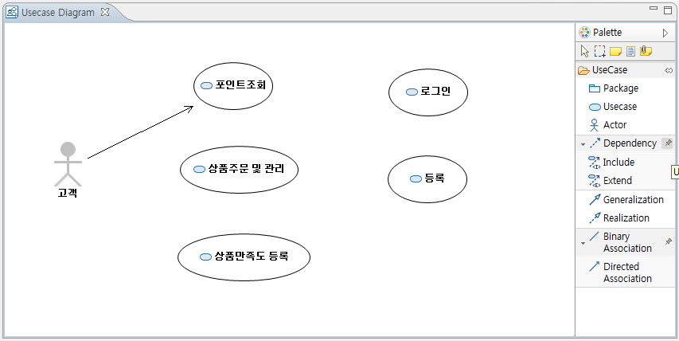
<그림 10. 생성된 연결선>
소스 노드에서 타겟 노드로 연결선을 드래그 하는 중에는 연결선의 피드백이 표시되어 타겟 노드위에 마우스를 가져갔을 때 두 노드간을 현재 드래그
중인 연결선으로 관계를 설정할 수 있는지 알수 있습니다.
두 노드 사이에 관계 설정이 가능한 경우엔 마우스 커서가 변화가 없지만 생성할 수 없는 관계 설정을 시도할 시에는 실행 취소 아이콘이 마우스
옆에 표시되게 됩니다.
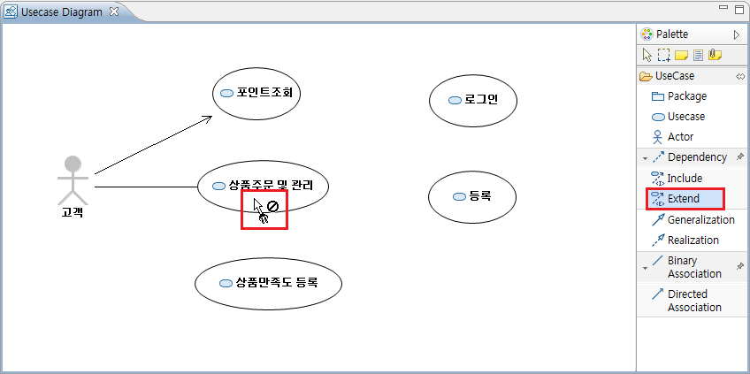
<그림 11. 연결할 수 없는 관계 표시>
팔레트에서 Extend를 선택한 후 Actor와 Usecase의 연결을 시도하였으므로 실행할 수 없다는 취소 아이콘이 마우스 커서 옆에
생성되었다.
※ Extend 연결선은 Actor-Actor간 또는 Usecase-Usecase간 관계 설정이 가능하다.
1.5.1 다이어그램 요소간 연결선을 꺾임선으로 변경
다이어그램에서 요소간 연결 관계선은 기본적으로 직선 형태입니다. 이 직선 형태의 연결선은 다이어그램내의 다양한 요소가 추가될 경우 연결 관계의
가시성이 떨어질 수 있습니다. 이런 단점을 해결하기 위해서 UML 모델러에서는 연결선의 형태를 꺾임선 형태로 변경해 줄 수 있습니다.
다이어그램 편집 화면에서 꺾임선으로 변경하고자 하는 연결선을 선택한 후 꺾고 싶은 방향으로 이동하면 선의 형태가 꺾임선으로 변경됩니다.

<그림 12 꺾임선의 표현>
1.6 다이어그램 컨텍스트 메뉴 (Context Menu)
UML 모델러에서는 사용자의 편의성을 고려하여 다음과 같은 컨텍스트 메뉴를 제공하고 있습니다.

<그림 13. 다이어그램 컨텍스트 메뉴>
 실행
취소(Undo)와 다시 실행(Redo)
실행
취소(Undo)와 다시 실행(Redo)
 다이어그램
내의 노드를 복사(Copy) 또는 잘라내기(Cut)하여 붙여넣기(Paste) 할 수 있습니다.
다이어그램
내의 노드를 복사(Copy) 또는 잘라내기(Cut)하여 붙여넣기(Paste) 할 수 있습니다.
 다이어그램 내
노드 삭제
다이어그램 내
노드 삭제
 다이어그램
내의 UML 요소(노드, 연결선)를 프로젝트 탐색기에서 검색하는 기능을 지원합니다.
다이어그램
내의 UML 요소(노드, 연결선)를 프로젝트 탐색기에서 검색하는 기능을 지원합니다.
속성(Attribute), 오퍼레이션(Operation)을 노드에 추가할 수 있습니다.
현재 활성화된
다이어그램을 이미지로 저장합니다.
다이어그램
저장 기능입니다.
1.6.1 노드의 복사(Copy), 잘라내기(Cut), 붙여넣기(Paste)
다이어그램 내의 노드를 복사 또는 잘라내기하여 동일 다이어그램 또는 다른 다이어그램에 붙여넣기 할 수 있는 기능입니다. 각각 단축키 [Ctrl
+ C] , [Ctrl + X] , [Ctrl + V]로 실행할 수 있습니다.
복사 또는 잘라내기를 실행할 노드를 다이어그램에서 선택한 후 마우스 오른쪽 클릭을 하여 컨텍스트 메뉴를 생성한 다음 [Copy Diagram
Node]를 선택합니다.
또는 단축키 [Ctrl + C]를 입력합니다.

<그림 14. 노드 복사>
노드 복사를 실행한 후에 다이어그램 내에 보여지는 특별한 변화는 없습니다. 단지 내부적으로 복사를 실행한 노드의 정보가
클립보드(Clipboard)에 저장되어 붙여넣기(Paste)를 준비합니다.
다이어그램 내에서 복사한 노드를 붙여넣고 싶은 위치에서 다시 마우스 오른쪽 클릭을 실행합니다. 또는 단축키 [Ctrl + V]를 입력합니다.

<그림 15. 노드 붙여넣기 #1>
다이어그램에서 마우스 오른쪽 클릭을 하게 되면 앞서 노드에서 마우스 오른쪽 클릭을 했을 때는 나타나지 않았던 [Paste Diagram Node]라는 메뉴가 나타나게 됩니다. [Paste Diagram Node] 메뉴는 복사하기나 잘라내기를 실행한 후에 나타나는 메뉴로 클립보드에 저장해 놓은 노드의 정보를 가져와 다이어그램 내에 생성합니다.
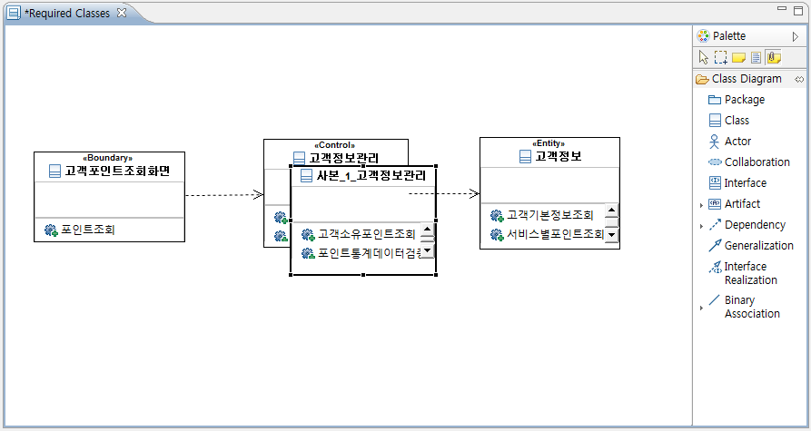
<그림 16. 붙여넣기로 복사된 노드>
복사된 노드는 원본 노드의 이름 앞에 [ "사본_" + Count Number ]를 붙여 유일한 이름을 가질 수
있도록 하였습니다.

<그림 17. 붙여넣기 실행 후 생성된 UML 요소>
복사기능은 단순히 다이어그램 내의 그래픽적인 정보만을 복사하는 것이 아니라 원본 UML 요소와 동일한 구조를 갖는 새로운 UML 요소를 생성합니다.
1.6.2 노드의 UML 요소 검색 (Find Element)
UML 모델링 작업을 수행하게 되면 간단한 프로젝트를 진행하더라도 아래의 그림과 같이 복잡한 트리 구조를 가지게 됩니다. 그렇기 때문에 다이어그램 내에 생성한 노드들의 UML 요소가 트리에서 어떤 위치에 있는지 찾기가 힘들 수 있습니다. 노드의 UML 요소 검색(Find Element)은 다이어그램 내 노드의 UML 요소를 프로젝트 탐색기의 트리 구조에서 찾아주는 기능을 수행합니다.

<그림 18. 노드의 UML 요소 검색>
검색 실행 후 결과물로 프로젝트 탐색기에서는 해당 노드의 UML 요소를 찾아 표시를 해주게 됩니다.
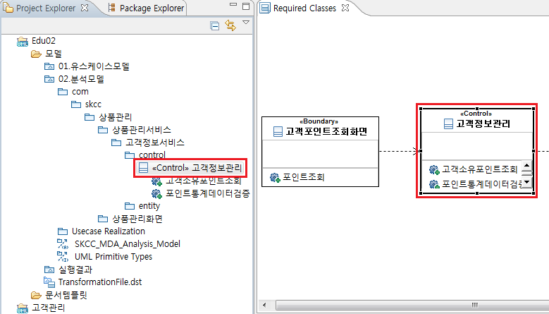
<그림 19. 노드의 UML 요소 검색 결과>
1.6.3 속성(Attribute), 오퍼레이션(Operation) 추가
속성(Attribute)의 추가는 클래스, 컴포넌트, 열거(Enumeration)의 세 노드에서만 활성화되는 기능입니다. 속성을 추가하고자 하는 노드를 선택하고 마우스 오른쪽 버튼을 누른 후 컨텍스트 메뉴에서 [Add Attribute]를 선택하거나 단축키 [F3]을 입력하여 실행합니다.

<그림 20. 속성 추가 메뉴>
오퍼레이션(Operation)의 추가는 클래스, 컴포넌트, 인터페이스의 세 노드에서만 활성화되는 기능입니다. 오퍼레이션을 추가하고자 하는 노드를 선택하고 마우스 오른쪽 버튼을 누른 후 컨텍스트 메뉴에서 [Add Operation]을 선택하거나 단축키 [F4]를 입력하여 실행합니다.

<그림 21. 오퍼레이션 추가 메뉴>
1.6.4 다이어그램의 이미지 저장
현재 활성화되어 있는 다이어그램을 이미지로 저장할 수 있는 기능입니다. 다이어그램 내에서 위치에 상관없이 마우스 오른쪽 버튼을 누른 후 컨텍스트 메뉴에서 [Save to image]를 선택합니다.

<그림 22. 다이어그램의 이미지 저장 메뉴>
메뉴를 실행하면 이미지를 저장할 위치와 이미지의 확장자를 선택하는 다이얼로그가 나타나게 됩니다.

<그림 23. 다이어그램의 이미지 저장 다이얼로그>
이미지 저장 형식은 JPEG(.jpg), PNG(.png), Bitmap(.bmp) 세 가지를 지원하고 있습니다.

<그림 24. 저장된 다이어그램 이미지>
2. 유스케이스 다이어그램 (Usecase Diagram)
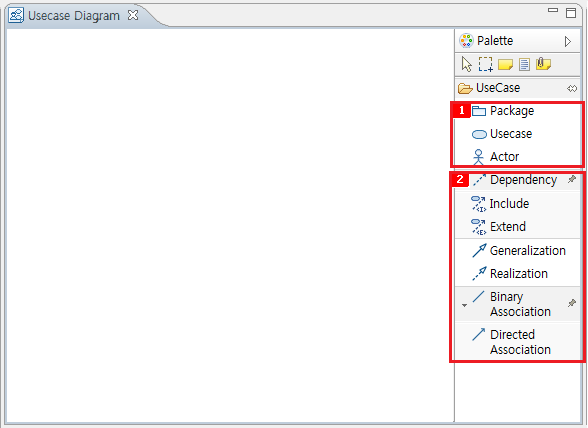
<그림 25. 생성 가능한 UML 요소>
유스케이스 다이어그램에서 생성 가능한 요소는
 세 개의 노드(Package,
Usecase, Actor)와
세 개의 노드(Package,
Usecase, Actor)와
 일곱 개의
연결선(Dependency, Include, Extend, Generalization, Realization, Binary
Association, Directed Association)이 있습니다.
일곱 개의
연결선(Dependency, Include, Extend, Generalization, Realization, Binary
Association, Directed Association)이 있습니다.
2.1 노드 생성
노드 생성은 팔레트에서 생성하고자 하는 노드를 선택한 후 다이어그램의 생성하고자 하는 위치를 선택 함으로서 간단하게 실행할 수 있습니다.

<그림 26. 생성된 노드>
2.2 연결선 생성
2.2.1 Extend 생성
Extend 연결선의 경우 생성 방식이 다른 연결선과 약간 다른 부분이 있습니다. Extend 외의 연결선은 소스 노드와 타겟 노드 사이의 마우스 드래그&드랍으로 생성되었지만 Extend의 경우 Extend의 확장점을 생성하는 하나의 단계가 더 있습니다.

<그림 27. Extend 확장점 생성>
 Extend 확장점 생성 팝업 메뉴
Extend 확장점 생성 팝업 메뉴
팝업 메뉴에서 <New>를 선택하게 되면 Extend 새로운 확장점이 생성되게 되며 이는 또 다른 Extend 연결 시에 확장점으로 사용할 수 있습니다.

<그림 28. 생성된 Extend 확장점>

<그림 29. 유스케이스 다이어그램 예제>
3. 클래스 다이어그램 (Class Diagram)

<그림 30. 생성 가능한 UML 요소>
클래스 다이어그램에서 생성 가능한 요소는  여덟 개의 노드(Package,
Class, Actor, Collaboration, Interface, Artifact, Data Type, Enumeration)와
여덟 개의 노드(Package,
Class, Actor, Collaboration, Interface, Artifact, Data Type, Enumeration)와
 열한 개의
연결선(Dependency, Abstraction, Usage, Generalization, Interface Realization, Binary
Association, Directed Association, Shared Binary Association, Shared Directed
Association, Composite Binary Association, Composite Directed Association)이 있습니다.
열한 개의
연결선(Dependency, Abstraction, Usage, Generalization, Interface Realization, Binary
Association, Directed Association, Shared Binary Association, Shared Directed
Association, Composite Binary Association, Composite Directed Association)이 있습니다.
3.1 노드 생성
클래스 다이어그램의 노드 생성 역시 팔레트에서 생성하고자 하는 노드를 선택한 후 다이어그램의 생성하고자 하는 위치를 선택 함으로서 간단하게 실행할 수 있습니다.
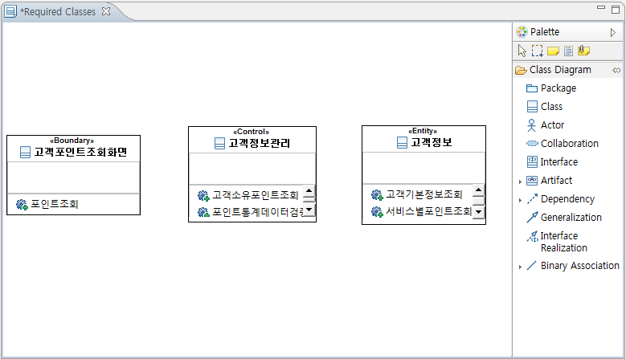
<그림 31. 생성된 노드>
3.2 연결선 생성
3.2.1 Association 생성
Association 연결선의 경우 생성 방식은 다른 연결선과 같지만 표현이 다른 부분이 있습니다. 다른 연결선이 UML 요소의 이름과 스테레오타입만 표현하는 것과 다르게 Association 연결선은 역할(Roll)과 다중성(Multiplex)을 추가로 표현하고 있습니다.

<그림 32. Association 연결선의 표현>
 역할(Roll) 라벨입니다. 두 UML 요소 간의 Association 연결 시 연관관계의 역할을 표현합니다.
역할(Roll) 라벨입니다. 두 UML 요소 간의 Association 연결 시 연관관계의 역할을 표현합니다.
 다중성(Multiplex) 라벨입니다. 두 UML 요소 간의 연결 시 매칭(Matching) 관계를 표현합니다.
다중성(Multiplex) 라벨입니다. 두 UML 요소 간의 연결 시 매칭(Matching) 관계를 표현합니다.
4. 시퀀스 다이어그램 (Sequence Diagram)

<그림 33. 생성 가능한 UML 요소>
시퀀스 다이어그램에서 생성 가능한 요소는  한 개의 노드(Lifeline)와
한 개의 노드(Lifeline)와
 세 개의
연결선(Synch Call, Asynch Call, Reply)이 있습니다.
세 개의
연결선(Synch Call, Asynch Call, Reply)이 있습니다.
4.1 노드 생성 (Lifeline)
시퀀스 다이어그램의 Lifeline 생성은 다른 다이어그램에서의 노드 생성과는 방식이 다릅니다. Lifeline은 유형(Type)이라는 개념이 존재하며 이에 따라 생성 시에 유형을 지정하는 단계가 추가 됩니다. 생성은 팔레트에서 Lifeline을 선택한 후에 다이어그램을 선택합니다. 생성을 실행 시 아래와 같이 유형 지정을 선택할 수 있는 다이얼로그가 나타납니다.

<그림 34. Lifeline Type 선택 다이얼로그>
 Lifeline의 유형을 지정하지 않고 Lifeline을 생성합니다.
Lifeline의 유형을 지정하지 않고 Lifeline을 생성합니다.
 새로운
클래스(Class)를 생성하여 생성된 클래스를 유형으로 갖는 Lifeline을 생성합니다.
새로운
클래스(Class)를 생성하여 생성된 클래스를 유형으로 갖는 Lifeline을 생성합니다.
 현재 프로젝트
내에 존재하는 유형들을 가져와 유형을 선택할 수 있도록 한 후 선택된 유형을 가지고 Lifeline을 생성합니다.
현재 프로젝트
내에 존재하는 유형들을 가져와 유형을 선택할 수 있도록 한 후 선택된 유형을 가지고 Lifeline을 생성합니다.
4.1.1 유형 지정하지 않음
Lifeline 생성은 유형을 지정하지 않아도 생성이 가능하므로 유형지정 없이 Lifeline을 생성합니다.

<그림 35. 유형을 지정하지 않은 Lifeline>
4.1.2 클래스 작성
클래스 작성을 선택하게 되면 아래 그림과 같이 생성할 클래스의 이름을 입력하는 다이얼로그가 나타나게 됩니다.

<그림 36. 클래스 작성 다이얼로그>
생성될 클래스의 이름을 입력하게 되면 입력한 이름을 갖는 클래스가 생성되며 이를 유형으로 하여 Lifeline이 생성 됩니다.

<그림 37. 클래스 생성 후 Lifeline의 유형 지정>
4.1.3 유형 선택
[유형 선택]을 선택하게 되면 아래 그림과 같은 다이얼로그가 나타나게 되며 프로젝트 내에 존재하는 유형으로 지정할 수 있는 모든 UML 요소들이 나타나게 됩니다.

<그림 38. 프로젝트 내에서 유형 검색>
UML 요소의 이름을 가지고 검색하여 원하는 UML 요소를 찾을 수 있으며 선택한 후에 [OK] 버튼을 눌러 Lifeline에 유형을 지정할 수 있습니다.
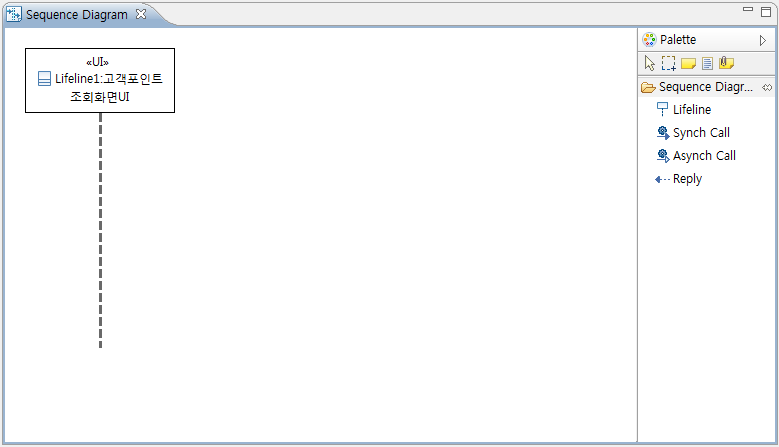
<그림 39. 선택한 유형을 가지고 Lifeline 생성>
4.2 연결선 생성
4.2.1 Synch Call, Asynch Call 생성
시퀀스 다이어그램의 연결선 생성 또한 노드(Lifeline) 생성과 마찬가지로 다른 다이어그램과는 차이가 있습니다. 시퀀스 다이어그램의 모든 연결선은 Lifeline의 점선으로 표시된 Line만이 연결선의 소스와 타겟이 될 수 있습니다.
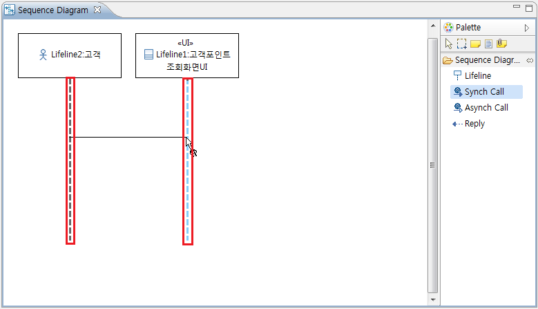
<그림 40. 시퀀스 다이어그램의 연결선 연결>
또한 Synch Call 과 Asynch Call의 경우 연결선의 오퍼레이션(Operation)을 지정하는 단계가 추가 됩니다. Synch Call 과 Asynch Call을 생성하게 되면 아래 그림과 같이 연결선에 나타낼 오퍼레이션을 선택하는 다이얼로그가 나타나게 됩니다.

<그림 41. 오퍼레이션 선택 다이얼로그>
 새로운
오퍼레이션을 생성하여 연결선에 지정합니다.
새로운
오퍼레이션을 생성하여 연결선에 지정합니다.
 타겟
Lifeline에 지정된 유형에 포함된 오퍼레이션 목록입니다. 선택하게 되면 해당 오퍼레이션을 연결선에 지정합니다.
타겟
Lifeline에 지정된 유형에 포함된 오퍼레이션 목록입니다. 선택하게 되면 해당 오퍼레이션을 연결선에 지정합니다.
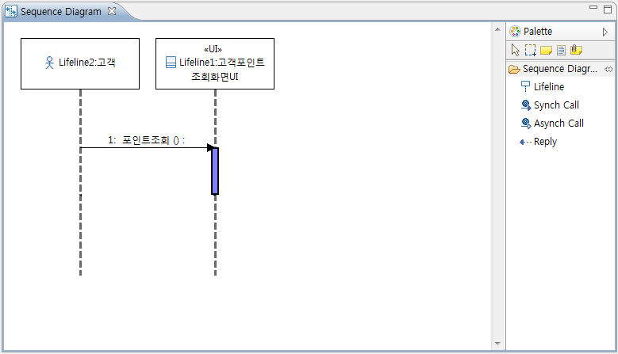
<그림 42. 생성된 Asynch Call>
4.2.1 Reply 생성
Reply 연결선의 소스는 항상 Behavior라고 불리는 그래픽 요소 위에서만 지정이 가능하고 타겟은 Synch/Asynch Call의 경우와 같이 Line 위에서 지정이 됩니다.

<그림 43. Reply의 시작점:Behavior>
Reply 연결선은 Synch/Asynch Call 과 다르게 오퍼레이션을 지정하는 단계가 없습니다.

<그림 44. 생성된 Reply>
5. 액티비티 다이어그램 (Activity Diagram)

<그림 45. 생성 가능한 UML 요소>
액티비티 다이어그램에서 생성 가능한 요소는
 아홉 개의 노드(InitialNode,
ActivityFinalNode, OpaqueAction, DecisionNode, MergeNode, ForkNode, JoinNode,
DataStoreNode, CentralBufferNode)와
아홉 개의 노드(InitialNode,
ActivityFinalNode, OpaqueAction, DecisionNode, MergeNode, ForkNode, JoinNode,
DataStoreNode, CentralBufferNode)와
 두 개의
연결선(ControlFlow, ObjectFlow)이 있습니다.
두 개의
연결선(ControlFlow, ObjectFlow)이 있습니다.
5.1 노드 생성
액티비티 다이어그램의 노드 생성 역시 팔레트에서 생성하고자 하는 노드를 선택한 후 다이어그램의 생성하고자 하는 위치를 선택 함으로서 간단하게 실행할 수 있습니다.

<그림 46. 생성된 노드>
5.2 연결선 생성
액티비티 다이어그램의 연결 관계 설정은 일반적인 연결 관계 설정과 동일한 동작으로 연결 관계를 선택한 후에 연결 하고자 하는 두 요소 간을 연결 함으로서 생성할 수 있습니다.

<그림 47. 연결 관계 추가>

<그림 48. 액티비티 다이어그램 예제>
6. 컴포넌트 다이어그램

<그림 49. 생성 가능한 UML 요소>
컴포넌트 다이어그램에서 생성 가능한 요소는
 네 개의 노드(Component,
Package, Interface, Aritifact)와
네 개의 노드(Component,
Package, Interface, Aritifact)와
 네 개의
연결선(Usage, Inerface Realization, Dependency, Abstraction)이 있습니다.
네 개의
연결선(Usage, Inerface Realization, Dependency, Abstraction)이 있습니다.
6.1 노드 생성
컴포넌트 다이어그램의 노드 생성은 팔레트에서 생성하고자 하는 노드를 선택한 후 다이어그램의 생성하고자 하는 위치를 선택 함으로서 간단하게 실행할 수 있습니다.

<그림 50. 생성된 노드>
6.2 연결선 생성
컴포넌트 다이어그램의 연결 관계 설정은 일반적인 연결 관계 설정과 동일한 동작으로 연결 관계를 선택한 후에 연결 하고자 하는 두 요소 간을 연결 함으로서 생성할 수 있습니다.
6.2.1 Interface Realization 생성
Interface Realization의 생성은 다른 연결선과 생성 방식에 있어서는 차이가 없으나 표현 방식이 다른 연결선과 다릅니다. 컴포넌트와 인터페이스가 Interface Realization으로 연결되었을 시 해당 인터페이스는 컴포넌트의 Provided Interface가 되어 컴포넌트 노드의 내부에 표시가 됩니다.

<그림 51. Interface Realization 연결 관계>
6.2.2. Usage
Interface Realization과 비슷한 경우로 Usage 역시 컴포넌트와 인터페이스가 Usage으로 연결되었을 시 해당 인터페이스는 컴포넌트의 Required Interface가 되어 컴포넌트 노드의 내부에 표시가 됩니다.
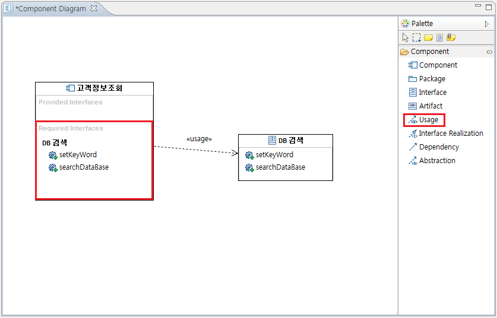
<그림 52. Usage 연결 관계>

<그림 53. 컴포넌트 다이어그램 예제>